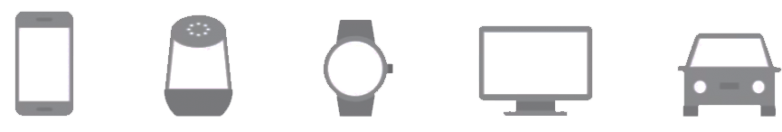
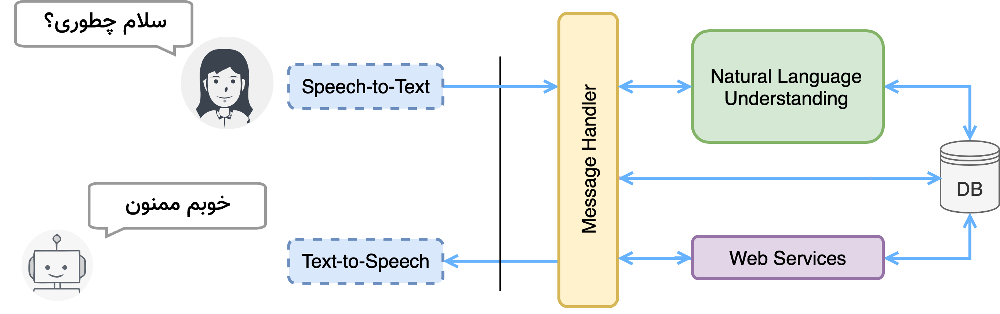
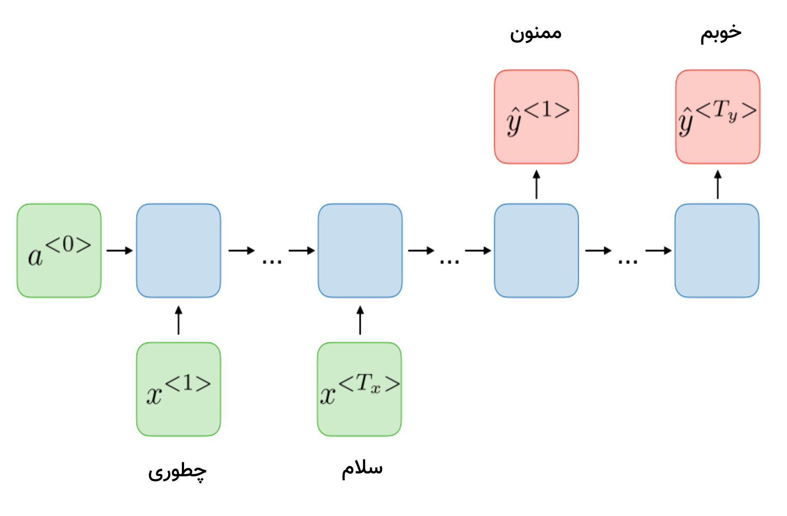

طبق پیشبینی گارتنر تا سال ۲۰۲۰ حدود ۲۰ درصد تجربه کاربری بدونتاچ خواهد بود!

اکثر شرکتهای بزرگ فناوری، دستیارهای هوشمند خود را به بازار معرفی کردهاند.

joorak_bot

Recommendation
Personalization
Context Aware
به امید دیدار در
bato.ai